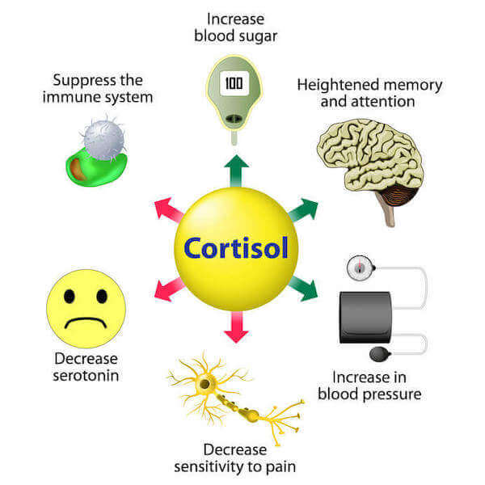

Determine Your Body Fat % With A.I. Using Only a Picture
What Factors Influence Your Body Weight?
Several factors have an impact on optimal health. These include body fat accumulation relative to total body mass, the type of fat present (visceral or subcutaneous), and the type of fat distribution in the body.
Body fat accumulation is affected by a number of variables, including hormones, diet, lifestyle, sex, age and genetics.
If you focus on finetuning your hormones along with diet and lifestyle, you will be able to achieve the fat loss you desire. Sex, age, and genetics, on the other hand, are attributes that cannot be modified.
A. Body Fat Accumulation
1. Hormones

Dr. Jason Fung in his ground-breaking book The Obesity Code: Unlocking the Secrets of Weight Loss demonstrated how hormones, in particular insulin, are the main drivers of obesity.
In his book, Dr. Fung advocated against victim blaming and pushed for a re-education campaign on how to tackle the obesity epidemic. Let's take a look into how the hormones insulin, leptin, ghrelin and cortisol influence our health.
INSULIN – also known as the fat storage hormone, is secreted by the pancreas when glucose (sugar) is detected in the bloodstream. Insulin allows cells to absorb glucose as a source of energy or store glucose as fat (to be used as energy in the future).
Insulin is secreted to help cells absorb the glucose in the bloodstream when food is consumed.

However, with regular consumption of high glycemic index foods (e.g., white rice, pasta, bread), overeating, excessive visceral fat (fat surrounding your organs), or a lack of exercise, the cells in the body can stop responding to insulin altogether. This leads to excessive glucose in the bloodstream (high blood sugar) and insulin resistance.
High levels of glucose in the blood is one of the precursors to Type 2 Diabetes. Diabetics require external doses of insulin (to supplement what is naturally secreted by the pancreas) in order to achieve the same cell glucose absorption as healthy people.
Regular physical activity and a diet low in refined carbohydrates is, therefore, a safe bet against the onset of insulin resistance and Type 2 Diabetes.

Note: Type 2 Diabetes is entirely preventable, and in some cases, reversible as well. Type 1 Diabetes, on the other hand, occurs due to a lack of insulin production in the pancreas, and there is currently no cure for this condition
LEPTIN – the ‘satiety’ hormone, is produced in the fat cells and signals the brain to stop eating. It helps the body maintain an optimal weight.
Leptin levels are high when satiety is achieved. Healthy individuals tap into fat reserves when leptin levels are low and food is unavailable. Obese individuals, on the other hand, can have high leptin levels but still not feel satiated - becoming desensitized to the hormone.
This leads to leptin resistance, which can have deadly consequences. Not only do such individuals overeat, but due to the overeating, they are unable to cure the leptin resistance.
These individuals also tend to be insulin resistant, which does not help. Diets low in carbohydrates and anti-inflammatory foods can help counter leptin resistance.

GHRELIN – known as the ‘hunger hormone’, is produced by the stomach. It helps stimulate appetite. It has the opposite effect of leptin. It plays a role in regulating the brain's reward system. Levels of ghrelin in the blood rise before a meal and fall after eating. Ghrelin, like hunger, is known to rise and fall in waves.
If you’ve ever been too busy to eat and find yourself not hungry anymore - this is ghrelin at work. Limiting refined carbohydrate intake and eating meals with sufficient protein content promotes satiety and helps reduce ghrelin.
Low ghrelin levels are necessary for long-term fat loss. Fasting has been shown to decrease ghrelin levels and increase growth hormone, which is useful in building lean muscle and aiding fat breakdown.

CORTISOL – known as the ‘stress hormone’, is produced by the adrenal glands when the hypothalamus in the brain senses danger or stress. Cortisol limits nonessential bodily functions in a fight or flight situation, such as appetite and sex drive.

The survival of the human race has been aided by our ability to sense danger and avoid it. However, too much cortisol in the bloodstream (arising from chronic stress) can lead to problems such as anxiety, depression, weight gain and sleeping issues, just to name a few.
It is very important to find healthy ways to manage daily stressors in life. A diet low in refined carbohydrates, plenty of sleep, meditation, daily walks and sports are just some of the ways to manage stress.
Here's an interesting article by Franziska Spritzler on proven ways to fix your hormones for weight loss.
2. Diet and Lifestyle, Sex, Age and Genetics
Body fat accumulates quickly with a diet high in refined carbohydrates (i.e., grains, potatoes, chips, bread, rice, pasta) due to the non-nutritious nature of these types of foods.
Sugary drinks and food cooked in vegetable oil also contribute to the obesity epidemic, and when eliminated from the diet, produce marvellous results.
Body fat accumulates more quickly in women than men due to the demands of reproduction and menstruation. As we age, our total body fat mass also tends to increase due to muscle mass reduction, slowing down of metabolism, and low testosterone levels.
Resistance/strength training along with a diet low in refined carbohydrates is the best natural way to prevent body fat from accumulating. External supplementation of testosterone may be appropriate for individuals with decreased sex drive and/or severe muscle loss.
Before starting any hormonal supplementation, it is imperative to consult an endocrinologist. Genetics influence the distribution of fat across the body. However, you cannot choose who you are born to and there is no point worrying about something you cannot change. Rather, it’s important to focus on what you can control.
B. Overall Health
Body fat is essential for survival. However, excessive body fat can lead to serious health concerns and complications and affect your quality of life. Let’s look at the different types of body fat.

VISCERAL FAT – is the fat that surrounds your internal organs. It is found mostly in the abdomen. Excessive visceral fat contributes to insulin resistance and metabolic syndrome and is very dangerous to human health. It is mostly characterized by excessive fat in the abdomen. A poor diet and lack of physical activity are the leading causes of high visceral fat.

Individuals with a low body fat percentage can still have a very large amount of visceral fat if they eat an unhealthy diet. The good news is that when you eat healthy meals that are low in refined carbohydrates and include daily physical activity in your lifestyle, visceral fat is usually the first type of fat to melt away.

SUBCUTANEOUS FAT – is the fat under the skin that you can easily grab. It is not generally considered as much of a health risk as visceral fat. Subcutaneous fat becomes worrisome when there is too much of it.
Losing subcutaneous fat takes discipline and dedication, but with the right foods, a positive mindset, and sufficient time, it is definitely possible.
NOTE: If you are interested, read more about brown fat or brown adipose tissue (good fat) which has been generating a lot of interest due to its ability to burn white fat (subcutaneous fat) when activated by cold weather.
1. Body Fat Distribution
The type of fat distribution you have has as great an impact on your health as does the total body fat you carry, maybe even more.
Knowing your fat distribution is crucial to monitor health risks and avoid diseases later in life. The two types of fat distribution are android fat distribution and gynoid fat distribution.

ANDROID FAT DISTRIBUTION – (also known as apple body shape) is a distribution of excess fat around the abdomen, trunk and upper body. This fat tends to be visceral, which as discussed above, comes with an increased risk of heart disease and stroke.
This type of fat distribution is more common in men than in women. Low levels of testosterone have been found to correlate with higher levels of central fatty deposits. A diet low in refined carbohydrates with regular physical activity can prevent the android distribution from becoming problematic.
GYNOID FAT DISTRIBUTION (also known as pear body shape) is a distribution of fat around the hips, thighs and buttocks. This distribution is found mostly in women and is influenced by the hormone estrogen.
Gynoid fat distribution tends to create a natural ‘hourglass’ figure. This shape in human females is generally regarded as attractive to males from an evolutionary standpoint. However, this is debatable.
Excessive gynoid fat is not as prone to harmful diseases as is the android distribution. However, overall body fat mass must always be maintained within a healthy range.
Note 1: Android (waist) to Gynoid (hip) ratio: Men with a waisttohip ratio of >1 & women with a waist-to-hip ratio of >0.8 have an increased risk of cardiovascular illness, diabetes, stroke, cancer, etc. (Source: Dexa Scans).
Note 2: As it is impossible to change your bone structure or genetics which influence how fat is distributed in the body, what you can do is focus on the things you can change, i.e., diet and lifestyle.
Disclaimer
The content on this site is for information purposes only. I (Bruce Rebello) am a licensed industrial engineer in the province of Ontario, Canada, with no medical training whatsoever. None of website content is meant to be taken as medical advice.
All I have done on this site is aggregate information that I think is beneficial. Speak to your healthcare professional for medical advice and read the book I mentioned in the resources section that is written by a healthcare professional.
I or the company that owns this web app will not be held liable for any claim, damage or other liability arising from, out, or in connection with using this web application and its content.
As a way of generating revenue to sustain this web app, estimatebodyfat.com is a member of Amazon’s Affiliate program and may earn a commission if you decide to buy any of the products recommended on this website through Amazon.